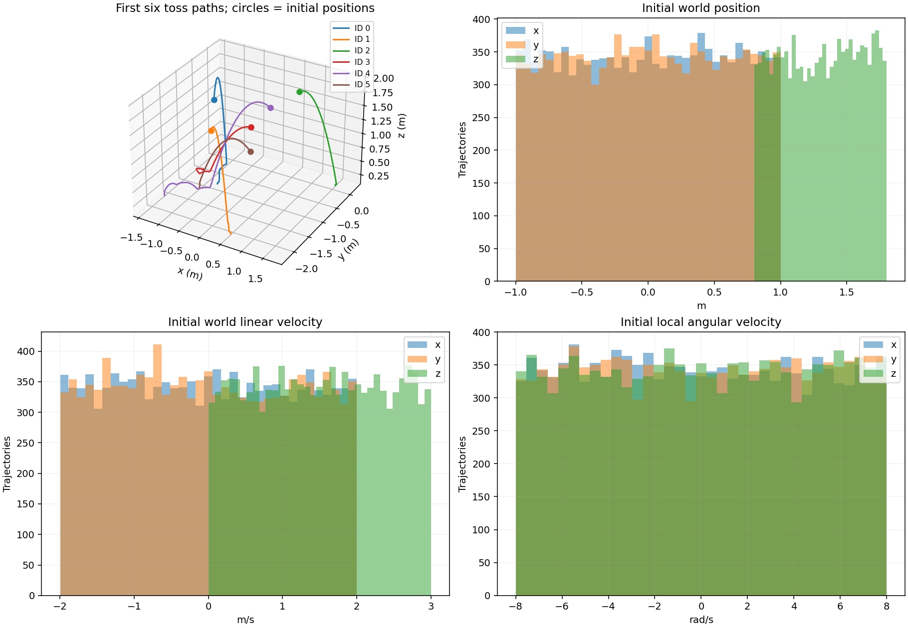

무구동 Cube 투척과 기존 데이터 감사
새 학습 데이터의 첫 6개를 같은 물리 시각으로 재생한다. 각 패널은 해당 궤적을 담는 카메라를 사용한다. 움직이는 GIF와 MP4로도 볼 수 있다.

기존 GT 01500–01503이 거의 같은 자세로 수직 하강한다는 관찰이 맞다. 모두 impact 시나리오이며 초기 수평 위치는 0, 자세는 [1, 0, 0, 0], 초기 각속도는 0이다. 다른 시나리오에는 미끄러짐·기울어진 상태의 정착·모서리 회전·반발·벽 충돌도 있지만 초기 조건의 범위가 좁았다. 또한 기존 데이터의 일부 시나리오에는 원하지 않는 random external wrench action이 있었다.
새 랜덤 투척 GT 6개 · 기존 9개 시나리오 비교 · 실제 Warp CUDA 투척 GT
기존 데이터에서 실제로 확인한 내용
data/cube-nerd의 13,000 trajectories를 전수 확인했다. 8,500개, 즉 65.38%에서 nonzero action이 있었으며 기록된 action 성분의 최대 절댓값은 1.57695였다. free_fall, settle, rest만 action이 모두 0이었다. 감사 결과와 대표 영상을 저장한 뒤, 새 데이터 검증을 완료하고 기존 원본 data/cube-nerd를 제거했다. 원시 감사 결과는 outputs/runtime/legacy_cube_audit.json에 남고 기존 갤러리·checkpoint도 과거 기록으로 보존한다.
기존 데이터 감사 JSON · 데이터 교체 기록. 제거한 원본은 약 135.9 MB이며 새 data/cube-toss와 별개의 경로였다.
| 기존 시나리오 | 대표 ID | 초기 조건과 움직임 | 기존 action |
|---|---|---|---|
free_fall |
00000 | 단위 회전, 높이 약 0.65–1.10 m, 작은 선속도의 낙하 | 모두 0 |
impact |
01500 | 바닥에 가까운 높이 약 0.22–0.26 m, 수직 하향 속도 1–2 m/s, 거의 평평한 착지 | nonzero |
rebound |
03000 | impact와 같은 초기 분포, 더 낮은 접촉 감쇠로 반발 | nonzero |
settle |
04500 | y축으로 조금 기울어진 자세, 작은 선속도·각속도에서 정착 | 모두 0 |
rest |
06000 | 바닥 위에서 작은 위치·yaw 변화, 거의 정지 | 모두 0 |
slide |
07500 | 바닥 위, x방향 초기 속도 약 0.6–1.4 m/s로 미끄러짐 | nonzero |
edge |
09000 | y축으로 기울어진 자세와 y축 각속도에서 모서리 회전 | nonzero |
wall_only |
10500 | 바닥 없이 벽을 향하는 수평 초기 속도, 이후 낙하·회전 | nonzero |
floor_wall |
12000 | 바닥·벽에 가까운 위치에서 두 접촉의 결합을 보는 OOD 진단 | nonzero |
01500–01503은 높이만 각각 0.243 / 0.247 / 0.223 / 0.223 m, 초기 수직 속도만 −1.628 / −1.153 / −1.307 / −1.031 m/s로 달랐다. 2초 동안 수평 이동의 최대값은 각각 약 2.50 / 0.43 / 0.29 / 0.97 mm였다. 따라서 네 영상이 거의 같은 수직 낙하처럼 보이는 것은 렌더링 문제가 아니라 선택한 초기 조건의 특성이다.
NeRD와의 관계, 그리고 action 0의 의미
NeRD Appendix C.4는 Cube 투척의 synthetic pretraining에 랜덤 초기 상태의 10,000 trajectories, 길이 100을 사용한다고 설명한다. 구체적인 위치·회전·속도 표본 범위까지 이 저장소와 같다고 주장할 근거는 없다. 아래 수치 범위는 역동적인 비행과 회전, 이후 접촉을 관찰하도록 이 구현에서 선택했다.
여기서 Cube는 motor가 없는 강체이며 투척은 초기 선속도와 각속도로 표현한다. 이후 action을 0으로 두어 중력과 접촉만으로 움직이게 한다. 0인 action은 중력이나 접촉력이 없다는 뜻이 아니라 추가로 가하는 제어 외력·토크가 없다는 뜻이다. 논문이 6차원 0 배열이라는 특정 저장 형식을 요구한다고 주장하지 않는다.
기존 모델·데이터 로더와의 shape 호환을 위해 actions는 (100, 6) 배열을 유지하고 모든 값을 정확히 0으로 저장한다. 6개 성분은 world 좌표의 root COM force/torque 표현이다. Ant의 8개 motor control은 별개의 action이며 이번 Cube 수정으로 0으로 만들지 않는다.
구현한 구성 요소와 이유
| 구성 요소 | 구현한 내용 | 구현 이유 |
|---|---|---|
toss 시나리오 |
Cube/직육면체의 위치·회전·선속도·각속도를 독립 표본 추출 | 평평한 수직 낙하 외에 이동·회전·다양한 면의 착지를 포함 |
| 균일한 3D 회전 | 등방성 4차원 Gaussian을 정규화한 unit quaternion | 특정 Euler 각이나 회전축에 편향된 자세 선택을 피함 |
| 초기 지면 분리 | 최소 높이를 물체 외접구 반경과 여유 간격 이상으로 검증 | 모든 초기 회전에서 물체가 바닥에 박힌 채 생성되지 않도록 함 |
| 무구동 action 정책 | Cube/직육면체 기본 rigid_action_mode: zero; toss는 zero만 허용 |
초기 투척과 비행 중 외력 입력을 혼동하지 않도록 함 |
| 명시적인 외력 실험 | random_wrench를 별도 설정에서만 허용 |
필요한 외력 진단은 남기면서 기본 학습 데이터에 섞이지 않게 함 |
| 재현 가능한 표본 | trajectory seed로 초기 상태 결정, MuJoCo/Warp 공통 초기화 | worker 순서나 backend에 따른 초기 표본 변화 방지 |
| 새 데이터 경로와 fingerprint | 생성 정책 버전 갱신, data/cube-toss로 별도 생성 |
기존 checkpoint와 새 데이터의 부정확한 학습 재개를 방지 |
| 전수 감사와 그래프 | 전체 action·초기 접촉·유한 상태 확인, 초기 분포와 경로 시각화 | 설정값뿐 아니라 실제 저장 데이터가 조건을 만족하는지 확인 |
| 갤러리 진단 표시 | 초기 자세·속도·각속도, action 0 여부 표시; 무구동 GT는 각속도 그래프 | 영상만으로 알기 어려운 투척 초기 조건과 회전을 확인 |
기본 투척 분포
configs/cube_toss_nerd_scale.json의 scene에서 범위를 바꿀 수 있다. 각 좌표 성분을 명시한 최소·최대 사이에서 균일하게 추출한다.
| 항목 | 표본 범위 | 좌표계·단위 |
|---|---|---|
| 초기 x, y | 각각 −1.0 ~ +1.0 | world, m |
| 초기 z | 0.8 ~ 1.8 | world, m |
| 초기 회전 | SO(3) 전체에서 균일한 회전 | 저장은 quaternion wxyz |
| 초기 vx, vy | 각각 −2.0 ~ +2.0 | world, m/s |
| 초기 vz | 0.0 ~ +3.0 | world, m/s; 위로 던진 뒤 중력으로 낙하 |
| 초기 ωx, ωy, ωz | 각각 −8.0 ~ +8.0 | body local, rad/s |
| 이후 action | 100 steps × 6 components 모두 0 | 추가 외력·토크 없음 |
| 길이 | 100 transitions, 101 states | 0.02 s 간격, 총 2 s |
기본 Cube의 반쪽 길이는 각 축 0.2 m다. 최소 높이는 외접구 반경 sqrt(hx²+hy²+hz²)에 최소 0.02 m 여유를 더한 값 이상이어야 한다. 크기·높이 설정이 이를 위반하면 오류를 내며, 회전을 다시 뽑거나 높이를 잘라 분포를 몰래 바꾸지 않는다. 초기 각속도는 local 좌표이며 world 선속도와 구별해야 한다.
train 10,000개, validation/test 각각 1,000개는 모두 이 toss 분포다. OOD 1,000개는 기존 floor_wall 초기 조건의 접촉 진단이며 action만 0으로 한다. 이 OOD는 랜덤 투척의 분포 확장으로 해석하지 않는다.
Docker Compose 실행 순서
먼저 16개 작은 데이터로 생성·시각화 경로를 확인할 수 있다. 구성은 train 12개, validation/test 각 2개이며 OOD는 없다.
docker compose run --rm research python -m cube generate --config configs/cube_toss_smoke.json --output data/cube-toss-small
docker compose run --rm -e MUJOCO_GL=osmesa research python -m cube visualize-data --dataset data/cube-toss-small --split train --scenario toss --limit 6 --output docs/visualizations/gt-toss-small
docker compose up -d docs
실제 Warp CUDA 생성은 같은 초기화와 action 정책을 사용한다. 현재 Warp adapter는 단일 world 경로이므로 작은 설정의 generation.workers: 1을 사용한다.
docker compose --profile gpu run --rm warp python -m cube generate --config configs/cube_toss_smoke.json --backend warp --device cuda:0 --output data/cube-toss-warp-smoke --resume
docker compose run --rm -e MUJOCO_GL=osmesa research python -m cube visualize-data --dataset data/cube-toss-warp-smoke --split train --scenario toss --limit 2 --output docs/visualizations/gt-toss-warp
본 학습용 13,000개 생성·검증·GT 렌더링:
docker compose run --rm research python -m cube data-plan --config configs/cube_toss_nerd_scale.json
docker compose run --rm research python -m cube generate --config configs/cube_toss_nerd_scale.json --output data/cube-toss --resume
docker compose run --rm research python scripts/audit_cube_toss.py --dataset data/cube-toss
docker compose run --rm -e MUJOCO_GL=osmesa research python -m cube visualize-data --dataset data/cube-toss --split train --scenario toss --limit 6 --output docs/visualizations/gt-toss
docker compose run --rm research python scripts/make_toss_preview.py
docker compose run --rm research python -m cube docs
docker compose up -d docs
--resume는 동일 생성 버전·설정의 완료 데이터 재사용 또는 중단 작업 재개에만 쓴다. 기존 data/cube-nerd는 생성 정책이 달라 이 명령의 출력으로 사용하지 않는다. 기존 파일을 덮어쓰거나 action 배열만 0으로 바꾸면 원래 상태와 action의 관계가 깨지므로 새로 시뮬레이션한다.
학습은 새 데이터로 시작한다. 5 epochs, global L2 gradient clipping 1.0, tqdm, W&B online은 유지한다.
docker compose --profile cuda run --rm cuda python -m cube train --dataset data/cube-toss --config configs/train_gpu.json --model hierarchical --seed 0 --output outputs/cube-toss-gpu-5ep/hierarchical
docker compose --profile cuda run --rm cuda python -m cube suite --config configs/suite_gpu.json --output outputs/cube-toss-suite-5ep --resume
둘 중 단독 모델 학습 또는 7개 설정 × 3 seeds suite를 선택한다. 둘 다 실행하면 별도 학습 실행이 생긴다. suite의 W&B group은 cube-toss10k-5ep-single-step이다. 이전 outputs/gpu-check의 checkpoint는 기존 진단 데이터로 학습한 3-epoch 모델이며 새 투척 모델로 이름만 바꿔 사용하지 않는다.
새 suite checkpoint가 생성된 뒤 GT와 모델을 비교한다.
docker compose --profile cuda run --rm -e MUJOCO_GL=osmesa cuda python -m cube visualize-rollout --dataset data/cube-toss --checkpoint outputs/cube-toss-suite-5ep/hierarchical_budget10000_seed0/best.pt --split test --scenario toss --limit 6 --horizon 100 --device cuda:0 --output docs/visualizations/model-toss
실제 실행과 검증
새 MuJoCo 주 데이터 data/cube-toss는 13,000 trajectories / 1,300,000 transitions의 생성을 완료했다. train 10,000개, validation/test/OOD 각 1,000개이며 기록된 생성 시간은 181.42초다. 이는 CPU worker 8개로 데이터 생성에 걸린 시간이며 GPU 모델 학습 시간과 다르다.
실제 Warp CUDA에서 작은 투척 데이터 16개를 생성했다. 기록된 생성 시간은 46.37초이며 첫 실행의 컴파일 비용 등을 포함한 해당 실행의 측정값이다. Warp GT 갤러리에 2개를 렌더링했다. MuJoCo와 Warp의 초기 상태 일치 및 짧은 zero-action 물리 경로도 확인했다.
전수 감사 명령은 docs/results/cube_toss_audit.json과 docs/assets/cube-toss-distribution.png를 생성한다. 실제 감사 결과는 passed: true다.
| 확인 항목 | 실제 측정 |
|---|---|
| 전체 13,000개의 nonzero action 성분 | 0개 |
| 전체 13,000개의 NaN/Inf 상태 trajectory | 0개 |
| 12,000 toss의 초기 접촉 trajectory | 0개 |
| 12,000 toss의 서로 다른 초기 state | 12,000개 |
| 2초 안에 바닥 접촉한 toss | 12,000개 / 12,000개 |
| 최초 endpoint 접촉 시각 | 0.32–1.04 s, 평균 0.641 s |
| 초기 선속도 크기 | 평균 2.275 m/s, 범위 0.141–4.054 m/s |
| 초기 각속도 크기 | 평균 7.699 rad/s, 범위 0.180–13.734 rad/s |
| 초기 quaternion norm 최대 오차 | 4.31 × 10⁻⁸ |
초기 quaternion의 각 성분 제곱 평균은 0.246–0.254로, 균일 회전 표본의 기대값 0.25 부근이다. 이는 구현과 표본을 확인하는 보조 진단이며 유한 표본만으로 모든 분포 성질을 증명하는 것은 아니다. 접촉 시각은 저장된 endpoint에서 최초로 관찰한 시간이다.
고속 회전·충돌 구간의 최대 substep penetration은 약 0.035 m였다. action 0, 올바른 초기 조건, 유한 상태가 확인되었다는 사실과 접촉 적분의 정밀도는 구별한다. 현재 0.005 s 물리 substep과 접촉 solver의 데이터이며, 더 작은 step에서의 수렴 검증이나 실측 Cube 정밀도까지 확인한 결과는 아니다. 데이터 생성 검증은 새로운 10K·5-epoch 모델 학습이나 구조 비교가 끝났다는 의미도 아니다.

메인 모델 학습에 사용할 수 있는가
새 데이터는 기존 학습 상태 계약인 qpos 7 + qvel 6 = 13차원 state, 6차원 action을 유지한다. 무구동 Cube의 action은 항상 0이지만 입력 상태의 위치·회전·선속도·각속도와 현재 기하가 달라지므로 서로 다른 다음 상태와 접촉 사건을 학습할 수 있다. action을 제거하기 위해 모델 구조나 decoder를 바꾸지 않는다.
메인 설정으로 train 전체에서 고르게 고른 40 trajectories / 4,000 transitions를 실제 확인했다. 출력 delta 정규화가 유한하고 표준편차 하한 0.02를 유지했으며, action 표준편차로 나누는 과정은 없다. 상태를 학습 target delta로 바꾼 뒤 복원하는 검사에서 최대 위치 오차는 1.19 × 10⁻⁷ m, 최대 속도 오차는 1.67 × 10⁻⁶였다. root를 수평으로 크게 옮겼을 때도 바닥 point가 root 주변으로 다시 추출되고 바닥의 높이와 world 속도는 0이었다. 전체 13,000개 episode seed도 모두 다르다. 모델·데이터 호환성 검증 JSON의 결과는 passed: true다.
docker compose run --rm research python scripts/verify_toss_model.py --dataset data/cube-toss --config configs/train_gpu.json --trajectories 40 --output docs/results/cube_toss_model_contract.json
이 검사는 학습이나 W&B run을 시작하지 않는 수치적 데이터·모델 호환성 검사다. 전체 action 전수 확인은 앞의 감사 결과가 담당하며, 예측 정확도는 별도의 실제 학습과 평가로 판단한다.
메인 계층형 구조를 그대로 사용하는 작은 실행 검증 설정도 분리한다. configs/train_gpu_toss_validation.json은 width 128, heads 4, local/global layers 3/3, 면당 64 points 등 본 모델 크기를 유지하고 train 16 trajectories × 100 transitions를 5 epochs 학습한다. 이 검증은 메인 경로의 로더·정규화·CUDA forward/backward·gradient clipping·평가가 실제로 동작하는지 확인하기 위한 것이다. 10,000개 전체 학습이나 21회 구조 비교가 완료된 것으로 해석하지 않는다.
docker compose --profile cuda run --rm cuda python -m cube train --dataset data/cube-toss --config configs/train_gpu_toss_validation.json --model hierarchical --seed 0 --output outputs/toss-validation/hierarchical
위 설정으로 실제 GPU 학습을 완료했다. 1,070,910개 파라미터의 메인 계층형 구조를 그대로 사용해 5 epochs, optimizer 20회 갱신을 수행했고, 기록된 시간은 24.67초였다. train loss는 23.006 → 1.314, validation loss는 13.697 → 1.258로 감소했다. 이는 상태 delta 정규화에 따른 학습 손실이며 미터 단위 오차가 아니다.
W&B online 실행에 20회 갱신이 기록됐고 skip된 update는 0회였다. 로그의 clipping 전 gradient norm은 36.995–643.587이었다. 별도 backward probe에서 clipping 전 70.7707 → clipping 후 1.0000을 확인했다. probe는 추가 optimizer step을 수행하지 않았다.
| 평가 split | 평가 trajectory 수 | 모델 one-step 위치 RMSE | 현재 상태 유지 baseline | 100-step 자율 rollout 위치 RMSE |
|---|---|---|---|---|
| Validation | 8 | 0.02807 m | 0.02132 m | 1.78763 m |
| Test | 8 | 0.02629 m | 0.01964 m | 1.33341 m |
| OOD floor_wall | 8 | 0.01574 m | 0.00044 m | 1.63724 m |
위치 RMSE는 세 좌표 성분 평균에 대한 값이다. 현재 상태 유지 baseline은 다음 상태를 현재 상태와 같다고 예측하는 기준선이다. 이 짧은 모델은 one-step 위치에서 그 기준선보다도 나쁘며, 장기 접촉 예측도 부정확하다. 수치 발산율은 0이지만 test의 접촉 판정 불일치율은 약 51.9%였다. 유한한 계산이 정확한 물리 rollout을 뜻하지 않는다.
실제 학습·평가 상세 JSON · 새 데이터로 학습한 검증 모델의 GT/rollout 영상
결론은 새 데이터가 메인 모델의 입력·정규화·GPU 학습 경로에 적합함을 확인했다는 것이다. 수렴된 모델이나 정확한 100-step rollout을 얻었다는 결론은 아니다. 기존 3-epoch checkpoint를 새 데이터에 적용한 결과도 아니다. 새 데이터에서 새 optimizer로 실제 학습했으며, 전체 10,000개 학습과 구조 비교는 위 train_gpu.json 또는 suite_gpu.json 명령으로 별도 수행한다.